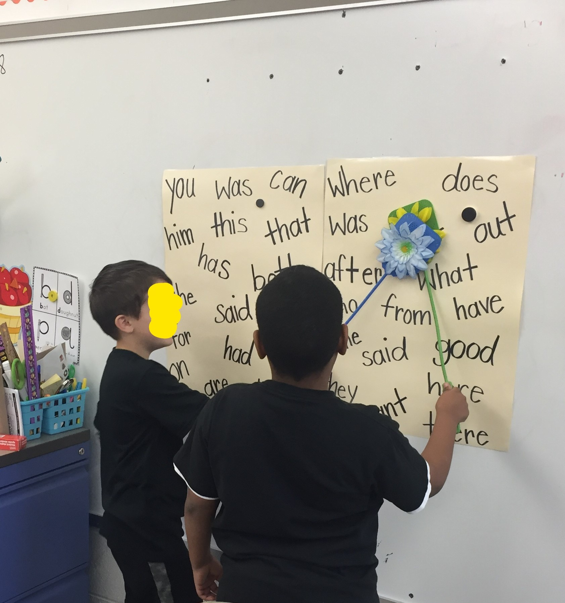

Home Strategies- Addressing Behavioral/Attention Deficits
I am going to share some strategies and ideas that I have implemented and trialed with various students in different classes that I have found successful across a variety of learners. I have also included some images below that provide you with a visual of some the strategies I am referring to.
- MOTIVATION: I believe a huge component to attending to the task at hand, compliance and work completion revolve around the students desire and willingness to participation or complete what is being asked of them. How is this going to benefit them, why should they complete this, what is going to be next etc.? Anytime a parent or teacher is starting an activity or introducing a new skill, an explanation needs to be given the stufent as to why they are doing it or learning this concept. Sometimes this alone will help motivate them, in other cases it is not that simple. Students who may have a harder time in school, most likely still will not respond to that or students with behavioral issues especially with non-preferred activities. This is where you can implement some different incentives or motivators.
- Below I have uploaded a couple images of behavior systems I used in my classroom. One being a "working towards board" where the student is provided with choices of what they can work towards earning after they complete so many tasks, or work for so many minutes. These incentives vary from student to student for me. For example, for once student he can choose between, coloring, 5 minutes with the liquid timer, a snack, playdough or a sticker. This system can be altered to use in any way you choose. I have some students where the tasks they complete have to be longer or more in depth in order to earn a thumbs up, for others they need that more immediate feedback and receive a thumbs up after complying with 3 teacher directives. This board can be simple, you could simply write it on paper and use stickers at home or even on a whiteboard, doesn't need to be laminated with velcro to have the same impact.
- INCENTIVE SYSTEM: Another classroom system I used to motivate my students is "Magic Beans" where we have 4 pieces of tape placed on the conatiner at different levels and when we hit that level we earn the reward. We decided as a class at the beginning of the year what we wanted to earn. They could earn these for simply returning homework, a signed paper, using their manners, getting a compliment from another teacher etc. I would let them place the beans in themseleves and sometimes they would earn even more than one at a time. They LOVED the idea that they were placing them into the goal jar. Even though it was not as immediate of feedback with actually earning the reward, the idea of earning the bean was motivation enough for most of my students. Again, this could be done at home with a few child or even one. You set goals like ice cream, movie day, or anything you think would work!
- ENGAGEMENT / INTEREST Another huge component in motivating students to put their best effort forth, comply and complete the task at hand is their interest and how engaged they are. Being in a learning support classroom full of students with ADHD and high energy, I have become pretty knowledgable with how to do this on a daily basis even with simple tasks or worksheets. Most of the strategies on the "Addressing Reading Deficits" at home page, would tie in with all of this as well.
- PREVIEW / SCHEDULE: Giving the students break down of what you are going to work today and the order you are going to do them definitely helps, especially when somewhere in their they know a short brain break is coming or maybe a few minutes of a review game. I always use the different sight word games as an incentive to get through our reading lesson. We have about four different ones they I use consistently and change it up on them so it is not as repetitive. We also do things like sight word fitness to give us a break and get them up and moving. Below in a picture of one of their favorite sight word games, Sight Word Swat, which can be turned into whatever kind of Swat Review game you can think. The kids absolutely loved this one!
- VIP TOOLS / BREAK BIN I also kept some VIP tools in the room as well as a Break Bin that I would pull out on occassion in the middle of a lesson or let hard working students use specific VIP tools class that day. For example, some things in the break bin included: Putty, Liquid Timer, squishy balls, different fidgets and stress balls. Most days we would stop halfway through our small group reading lessons for a "Minute Movement". I just kept a basket of stress balls near by and we would count for ten seconds squeezing it with different hands or in different ways, even just those one or two minute breaks help redirect them to the task at hand once we were done. VIP Tools can be whatever special items you think your child would be interested in using or having at their work space etc. My VIP tools included a giant eraser, fuzzy pens, highlighters, stickers, stamps, pencils grips, star post it notes brag tag necklace, etc. anything that would recognize their hard work or a tool they would enjoy using during the lesson.
- ADHD / SENSORY TOOLS Lastly, speficically for those attention problems, all these tools we buy for the classroom you can easily find at home and use in the same way. Most of the tools I am going to share with you were purchased on Amazon. I have several students who responded sp well to these colorful liquid timers I found on Amazon, I think I paid somewhere between $5-$7 for once and so worth it! I would occasionally use it for an actual timer depending, but alot of them enjoyed just having a couple minute break holding it, turning it upside and looking at it. Also, Amazon had endless amount of fidget toys, but if you would rather save some money, you can find plenty at the dollar store. Even if you are practicing sight words or working on something that does not require the child to write, they could squeeze a squishy ball, hold a stress ball or a fidget. You can also purchase the seat cushions with the little bumops for sensory input on amazon. I currently have 3 in my room that were all purchased on amazon.
